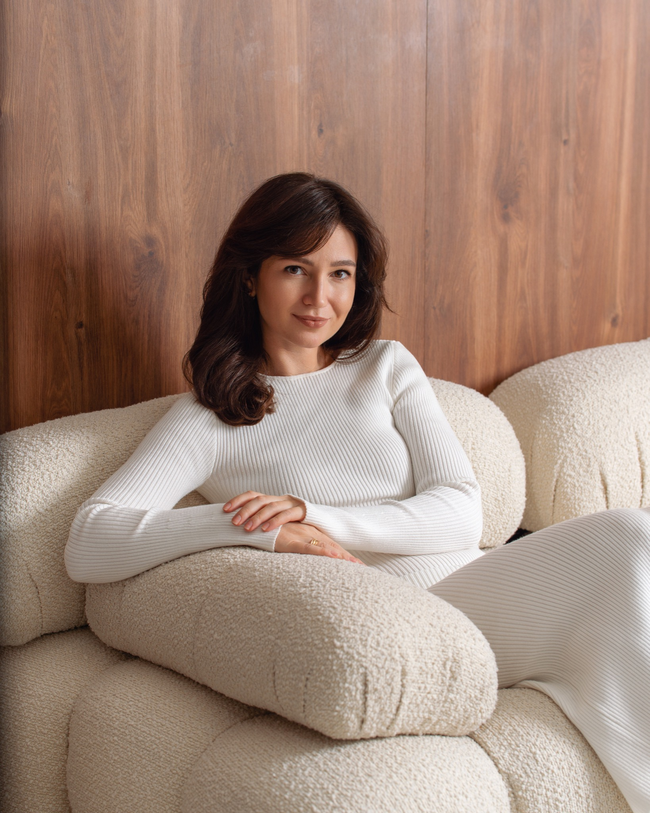
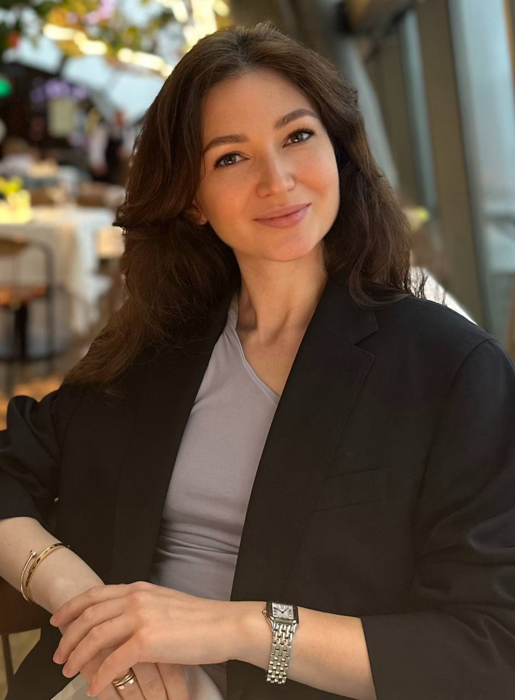

Кризисы и изменения
Когда прежние опоры перестали работать, а новые еще не сформировались.
Бизнес-психолог • Executive-коуч • Гештальт-терапевт
Помогаю руководителям, предпринимателям и специалистам проходить кризисы, принимать сложные решения и выстраивать устойчивую жизнь без выгорания.


Обо мне
Я работаю на пересечении психологии, коучинга и организационного консультирования. Мой подход помогает не только справляться с внутренним напряжением, тревогой и выгоранием, но и лучше понимать себя в профессиональной роли, отношениях и жизненных выборах.
В работе я соединяю глубину гештальт-подхода, практичность executive-коучинга и системный взгляд на бизнес-контекст.
С чем можно обратиться
Когда прежние опоры перестали работать, а новые еще не сформировались.
Когда много ответственности, усталости и внутреннего напряжения.
Когда важно вернуть ощущение собственной ценности и устойчивости.
Когда сложно говорить о себе, отстаивать решения и выстраивать близость.
Когда нужно выбрать направление, сменить роль или пройти профессиональный переход.
Когда решения, команда и ответственность требуют внутренней ясности.
Форматы работы
Индивидуальная работа с личными запросами, кризисами, отношениями, тревогой и эмоциональным состоянием.
Глубинная работа в реляционном гештальт-подходе: контакт, осознавание, чувства, выбор, устойчивость.
Работа с профессиональной ролью, лидерством, решениями, границами, коммуникацией и управленческой устойчивостью.
Помощь в понимании процессов, командных динамик, управленческих сложностей и изменений внутри организации.
Как проходит работа
Знакомимся, формулируем запрос и определяем подходящий формат работы.
Разбираем ситуацию, внутренние конфликты, эмоции, контекст и повторяющиеся сценарии.
Формируем ясность, устойчивость и новые способы действовать.
Переносим изменения в реальные решения, отношения и профессиональную жизнь.
Профессиональная основа
Работа опирается на психологическое образование, подготовку в гештальт-подходе, executive-коучинг и опыт взаимодействия с бизнес-контекстом.
Личный и организационный контекст
Индивидуальная работа может касаться не только личных переживаний, но и решений, коммуникации, лидерства, ответственности и изменений внутри команды.
FAQ
Обычно индивидуальная встреча длится 50-60 минут.
Да, консультации возможны онлайн.
Можно прийти даже без четко сформулированного запроса. Первая встреча помогает прояснить, что именно сейчас требует внимания.
Формат зависит от запроса. Иногда работа больше связана с личными переживаниями, иногда с профессиональной ролью, решениями и управленческим контекстом.
Начните с первой встречи
Напишите удобным способом, чтобы согласовать время и коротко обозначить, с чем вы хотите прийти.